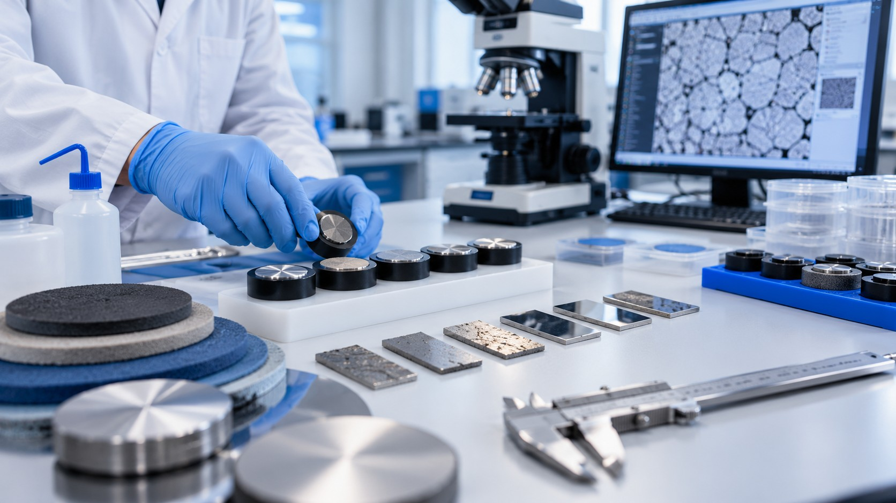
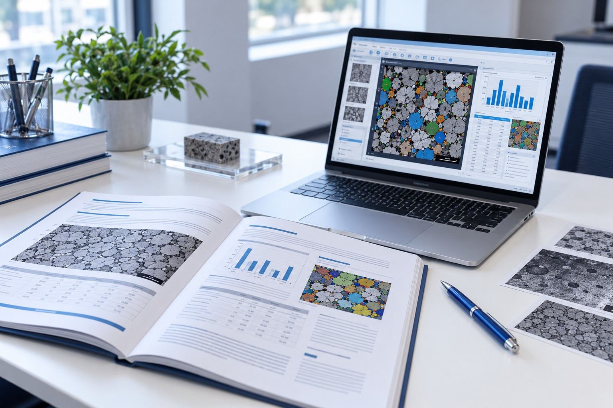
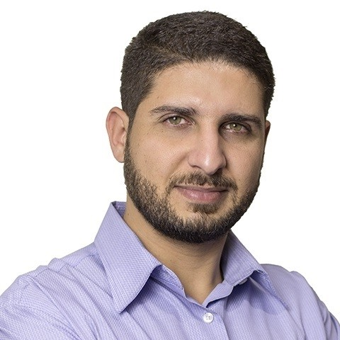

Conhecimento especializado
Recursos alinhados a tarefas de caracterização de materiais e análise metalográfica.
Nossa atuação
A SIM - Soluções Inteligentes em Materiais é uma spin-off da COPPE/UFRJ,
fundada em 2010 para desenvolver e oferecer soluções para a Engenharia de Materiais.
Seu principal produto é o Metallographica, software para caracterização de materiais por análise de imagens, comercializado em todo o Brasil desde 2012. A ferramenta reúne recursos de tratamento de imagens, medições e análise microestrutural em um ambiente integrado.
Nossa abordagem
Uma abordagem voltada à organização do processo de análise, desde a preparação da imagem até o registro dos resultados.
Recursos alinhados a tarefas de caracterização de materiais e análise metalográfica.

Ferramentas que apoiam diferentes etapas de tratamento, medição e classificação de imagens.

Recursos para salvar resultados, exportar medições e gerar relatórios de análise.
Quem está por trás da SIM
Uma combinação de visão de negócio e conhecimento técnico em engenharia e caracterização de materiais.

CEO · Sócio fundador
À frente da SIM, Gregorio conduz a visão de negócio e o desenvolvimento da empresa, conectando as soluções da SIM às necessidades de profissionais e organizações que atuam com materiais.
Ver perfil no LinkedInCTO · Sócio fundador
Engenheiro com formação e atuação em Engenharia Metalúrgica e de Materiais, Bernardo contribui com a direção técnica e o desenvolvimento de soluções para caracterização de materiais. Seu percurso inclui trabalho com análise de imagens, metalografia quantitativa e pesquisa em engenharia.
Ver perfil no LinkedIn